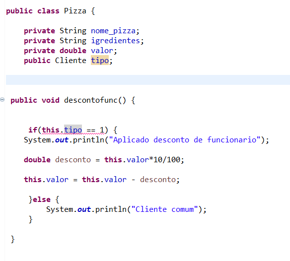
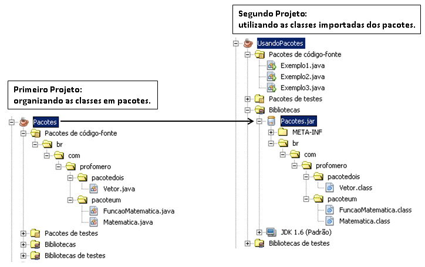

Bibliografia
...
Integrantes
Beatriz, Enzo, Giovana, Paola
POO E SUAS CARACTERÍSTICAS
Topicos a serem pesquisados:
- Objeto
- Classe
Qual é o assunto que deseja saber?

Definição de POO
Definição de POO
O POO é um paradigma de programação orientado a objetos, onde a grande maioria das linguagens de programação modernas estão baseadas nesse tipo de modelo. Com esse paradigma, o conceito tradicional de programação muda completamente. Através de quatro características inerentes a esse tipo de paradigma (objeto, classe, atributo e método), houve uma transformação na forma de programar, tornando o conceito de código-fonte algo completamente inovador.
Características de POO
A programação orientada a objetos traz uma ideia muito interessante: a representação de cada elemento em termos de um objeto, ou classe. Esse tipo de representação procura aproximar o sistema que está sendo criado ao que é observado no mundo real, e um objeto contém características e ações, assim como vemos na realidade. Esse tipo de representação traz algumas vantagens muito interessantes para os desenvolvedores e também para o usuário da aplicação.
Pilares da OO
herança: é quando no objeto principal há vários atributos e métodos, que podem originar-se de um atual objeto (pai) para a geração de um novo código (filho). polimorfismo: um objeto se passa por outro em determinadas circunstâncias, conforme as decisões do próprio Dev que está executando o projeto. encapsulamento: esconde detalhes da implementação do código, conforme os interesses de cada projeto. abstração: representa-se o objeto de forma abstrata, embora muitos também considerem a abstração como uma união entre os conceitos de encapsulamento e de polimorfismo.
Atributos
Os Atributos são os elementos que definem a estrutura de uma Classe. Os atributos também são conhecidos como variáveis de classe, e podem ser divididos em dois tipos básicos: atributos de instância e de classe. Os valores dos atributos de instância determinam o estado de cada objeto. Um atributo de classe possui um estado que é compartilhado por todos os objetos de uma classe. Atributos de classe podem ser chamados também de atributos estáticos ou constantes.
Métodos
Quando definimos um objeto num programa orientado a objetos, implementamos todo o comportamento desse objeto em um ou mais métodos. Um método em Java é equivalente a uma função, subrotina ou procedimento em outras linguagens de programação. Todos os métodos devem sempre ser definidos dentro de uma classe.
Modificadores de Acesso Java controla o acesso a atributos e métodos através do uso dos modificadores de acesso. São eles : public : É o menos restritivo de todos. Atributos e métodos declarados como public em uma classe podem ser acessados pelos métodos da própria classe, por classes derivadas desta e por qualquer outra classe em qualquer outro pacote (veremos mais sobre pacotes e classes derivadas posteriormente). protected : Atributos e métodos definidos como protected são acessíveis pelos métodos da própria classe e pelas classes derivadas. private : É o mais restritivo. Atributos e métodos declarados como private só podem ser acessados pelos métodos da própria classe.
Pacotes
Pacote é um envoltório de classes, ou seja, guarda classes e outros pacotes logicamente semelhantes ao pacote que os contém. Podemos visualizar os pacotes como diretórios ou pastas, nos quais podemos guardar arquivos (classes) e outros diretórios (pacotes) que tenham conteúdo relacionado com o pacote que os contém.
Interface
A interface é um recurso muito utilizado em Java, bem como na maioria das linguagens orientadas a objeto, para “obrigar” a um determinado grupo de classes a ter métodos ou propriedades em comum para existir em um determinado contexto, contudo os métodos podem ser implementados em cada classe de uma maneira diferente. Pode-se dizer, a grosso modo, que uma interface é um contrato que quando assumido por uma classe deve ser implementado.

Enumerações
Em programação orientada a objetos (POO), enumerações (ou enums) são tipos de dados que permitem definir um conjunto fixo e limitado de valores constantes. Isso é útil para representar opções, estados ou categorias específicas em um programa. Enums tornam o código mais legível, reduzem erros e melhoram a manutenção, pois limitam as opções disponíveis para uma variável ou propriedade a um conjunto predefinido de valores.

Serialização de objetos
A serialização de objetos em Java é um processo que permite transformar um objeto em uma sequência de bytes, que pode ser armazenada em um arquivo, transmitida pela rede ou persistida em um banco de dados. é implementada por meio da interface java.io.Serializable. Para tornar um objeto serializável, você precisa fazer com que a classe do objeto implemente essa interface. Apenas objetos cujas classes implementam Serializable podem ser serializados.

Relacionamento de objetos
Um relacionamento de objetos na programação orientada a objetos (POO) refere-se à maneira como objetos interagem em um sistema de software. Existem vários tipos de relacionamentos, incluindo associação, agregação e composição. Esses relacionamentos definem como os objetos se conectam e colaboram. Associação é uma conexão simples, agregação é uma conexão mais forte onde as partes podem existir independentemente do todo, e composição é uma conexão ainda mais forte onde as partes estão intrinsicamente ligadas ao todo. Além disso, herança, dependência e associação bidirecional são outros tipos de relacionamentos comuns em POO. A escolha do tipo de relacionamento depende das necessidades específicas do sistema a ser modelado.